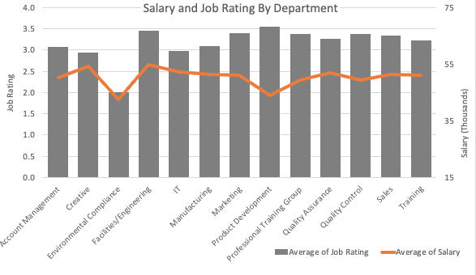

In this project, I worked as part of a team to build a temporary webpage with interactive visualizations and tables.
My roles were to extract and trasform the data as well as to create the line plots looking at the zestimate data over time in Plotly. I worked closely with other team members to build the JS endpoints and connect with the PostegreSQ database using SQLAlchemy.
I later decided to extend the project by created a Tableau Dashboard to better summarize trends and compare capabilities with Plotly. I would present the analysis to potential homebuyers and/or future Austinites with the Tableau Dashboard.
The Tableau Dashboard includes interactivity so the user can click on a zipcode to look at its key performance metrics. The dashboard is also color coded to make it clear in which region of Austin a zipcode is.
Some Key Findings:
1. All zipcodes experienced similar changes over time. However, during a period of steady home value increase between 2012 and 2016, there was more variability between the zipcodes where East and South East Austin Zipcodes experienced higher month to month increases staying between +1.5-2%.
During this time, the other zipcodes maintained monthly increases closer to +0.5-1.0%.
2. East and SouthEast Austin experienced the largest percentage change in price in the last 10 years, over 200% increase in average prices. SouthWest Austin experienced the lowest percent change: 91%.
Regions East of 135 have historically had significant Black and Hispanic minorities. It is notable that these regions also had the largest jumps in home values.
3. Monthly zestimate changes in Austin became more volatile at the onset of the COVID epidemic.
Before the pandemic, investing in several Austin Zipcodes look promising, but investing now could be risky as the housing market has yet to stablize.
Skills/tools used: Python, Pandas, PostgresSQL, PGAdmin4, Javascript, Plotly, HTML, CSS

Before starting or investing in a crowdfunding campaign for start ups, it is important to know what makes a successful campaign!
This project looked to what kind of campaigns were successful and to look at the metrics around repeat campaigns.
I would make a summary page of the query results to show potential investors or entrepeneurs looking to start a campaign to aid in the decision process.
I would ask that the client make request on other queries they would like performed on the data.
Some Key Findings:
1. Journalism and technology campaigns were the most successful, while gaming campaigns were the lesat successful with less than half proving to be successful.
2. There did not appear to be scammers: No individuals were starting multiple campaigns under multiple companies.
3. Overall success rate ranged between 50-58% with the least successful campaigns being based in the Canada and the most successful campaigns being based in Britain.
Skills/tools used: Python, Pandas, PostgresSQL, PGAdmin4, QuickDBD (to build Entity Relationship Diagram)
Crash Course is a YouTube Channel devoted to providing free and accessible education to students everywhere, but it is still a business.
This project aimed to look for trends in the channel statistics and determine what decisions the company can make to get them more of those money-making views.
I would present the findings to Crash Course through a Tableau Story with interactive dashboards and ultimately talk about recommendations on course decisions to make in the future.
Some Key Findings:
1. The most popular genre of courses are history, social sciences, Enlish, and the social sciences.
The least popular genre is film. I would recommend Crash Course invest more resources towards history courses.
2. The view count drops and the duration of each epsiode rises over the course of a season regardless of genre.
However, there is not a correlation between duration and view count or like count.
It may be worthwhile then to focus on producing more courses with shorter seasons.
Skills/tools used: Python, Pandas, YouTube API, Tableau
Are cryptocurrencies an attractive investment given current economic indicators and sentiment? To answer this question,
data was extracted from multiple sources and transformed in Python. The machine learning models were built to analyze sentiment and forecast market performance.
In order to present this analysis to clients, I would provide them with Tableau Dashboards displaying the results.
Some Key Findings:
1. Bitcoin sentiment fluctuates with world events and there is some correlation with Bitcoin news sentiment and it market performance.
However, sentiment analyis failed to provide predictive power when used as a variable for forecasting.
2. Vader more accurately predicted what the team identified as being positive headlines while the Random Forest NLP labeled them as neutral. Accuracy for both models varies wildly: 40-80%.
Natural Language Processing Tools need to be be more finely tuned and trained on more robust and related data.
Skills/tools used: Python, Pandas, PostgresSQL, PGAdmin4, Vader, Random Forest Model (AI), NewsAPI

As times change and the world moves to be more online, companies like Adidas need to pay close attention to customer behavior.
This project aims to identify key performance indicators for Adidas merchandise in order to make suggestions on areas of potential in order to bolster sales.
This analysis would be presented to managers via interactive MS Excel Dashboards where managers can filter through the data by the "gender" of the item, the region of sale, and the retailer.
Some Key Findings:
1. Apparel items geared toward females are far more popular than those geared toward men regardless of sale-method; this correlates with a higher price per unit for female aparrel items as well.
This demonstrates that raising the price of female oriented goods does not equate to lower sales.
2. There is a 46.71% drop in outlet units sold in the Summer 2021 during the months of June and July. A significant drop was present in both years of data provided.
It may be worth investing in marketing towards students out for the summer or ensuring inventory is not sitting and to avoid inventory obsolescence.
Skills/tools used: Excel, PivotTables, PivotCharts

Employee happiness is important for retention and productivity.
In this project, I examined employee happiness and how salaries reflected the number of years an employee was at the company.
I would show the managers at the company the excel dashboard where they can sort employees by their employement status and department.
Managers can test out different progressive raises based on an employee's time at the company and how it effects the company's profit margin.
Some Key Findings:
1. Salaries do not reflect employee's number of years at the company regardless of deparment or employment status.
Managers may consider rewarding employees based on their number of years at the company as the overall job rating at the company is below 3.5/5.
2. Managers should survey the Environmental Compliance Department to discuss complaints as this deparment has the lowest job rating overall.
This department also has the overall lowest average salary which could play a part in job satisfaction.
Skills/tools used: Excel, PivotTables, PivotCharts

This project aimed to see how reliable ratings are from the general public and food trends over time. Python was used to extract and transform the data. Regex was used to identify trendy ingredients. Discovered that you really can't rely on public ratings!

Project to find a new dishwasher by webscraping wayfair and producing a summary dashboard in Tableau. Discovered what qualities impact a dishwashers rating and which dishwasher brand provides the best for the price.

In this project, I extracted messy shark encounter data via an open API and then cleaned it in Python.
The cleaned dataset was then analyzed by making a dashboard in Tableau that looked at key metrics such as shark species.
Geography and geology are fascinating (who doesn't love volcanoes!) and invaluable fields. The purpose of the project is to gain experience with GIS and GIS software